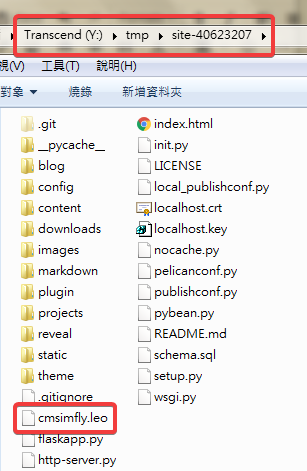

修改投影片 ↓
step1 : 開啟 reveal.leo 的檔案
step2 : 將封面與投影片內容的 Created by 與 blog 網址連結換成自己的
step3 : 儲存後查看是否有正確更改
將 blog 改成正確的介面 ↓
step1 : 開啟 pelican.leo 的檔案
step2 : 點 local-blog 右鍵的 Goto Script 並確認近端執行完畢
step3 : 查看近端 blog 的介面是否正確
step4 : 將遠端的 blog 連結及 SITENAME 改成正確的 ，點 github-blog右鍵的 Goto Script 並確認 Github 執行完畢
step5 : 查看 blog 的介面是否正確
將圖片加上外框 ↓
step1 : 開啟 cmsimfly.leo 的檔案

step2 : 點 syntaxhighlight ，在最後加上以下內容，並直接儲存
<style>
img {
border: 2px solid blue;
}
</style>
step3 : 查看圖片是否有正確加框
課程內容 :
學員學會如何管理各自位於 https://github.com/mdecadp2018/ 中的期中作業倉儲，然後在 W9 前，自行掌握進度，每週拍攝操作實習影片，將教材內容與使用心得放入個人的網站、簡報與網誌中。
已經利用 Settings 將內定 branch 設為 gh-pages, git clone 作業倉儲至近端後，著手將練習 Onshape 的各項過程資料存入 CMSimfly, Reveal.js 與 Pelican Blog 中。
心得 : 這禮拜老師要我們將上課所學錄製成影片並加上心得放上個人的網站、簡報與網誌，並且每個禮拜都要，要自行掌握進度，不要都擠到期中期末才要作，希望我可以做到，然後有效的運用時間。